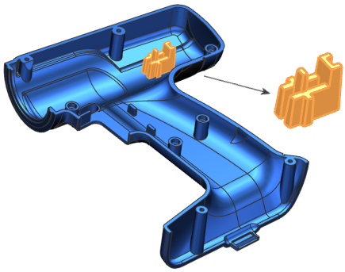
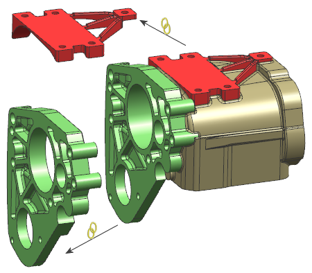

预计完成这堂课需要：1 小时
部件模块支持设计者将单个复杂部件中的特征划分为逻辑组。此划分允许设计者一次关注复杂部件的一个区域，因为这样更易显示和更新该区域。
每个部件模块包含一个主部件文件内部的特定特征组。在以下示例中,高亮分区的所有草图、拉伸和折弯均在一个“部件模块”中。

可以在主部件文件中创建多个“部件模块”，并将这些部件模块的特征移动到相应的外部“链接部件模块”文件中。每个外部“链接部件模块”文件已使用部件间 WAVE 引用链接到其主部件文件中相应的“部件模块”。
链接部件模块允许多个设计者同时处理一个复杂部件。团队中的设计者可以更改其“链接部件模块”中的设计元素，这对其他文件影响甚微，或者没有影响。设计团队的典型工作流将受到主要设计者控制。主要设计者：
在主部件文件中创建处于未完成状态的“部件模块”，然后将这些模块分解为单独的“链接部件模块”文件，而这些链接部件模块文件将被分配给设计团队的成员。
更新主部件文件中的每个“链接部件模块”特征，以查看设计者进程，并确保继续下游工作是基于主部件文件中的最新几何体。
将已完成的“链接部件模块”文件合并到主部件文件中。
在下面的示例中，在外部“链接部件模块”中设计摩托车变速箱的框架和主驱动器托架。

|
应用模块 |
建模和外观造型设计 |
|
工具条 |
特征重放 |
|
菜单 |
格式→部件模块 菜单中包含工具条上找不到的其他命令。 |